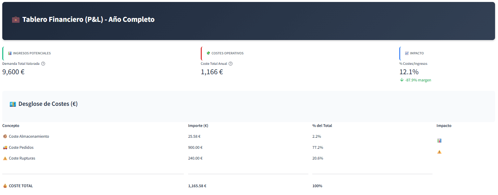
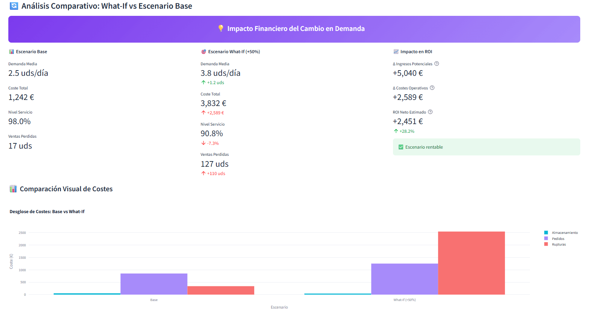
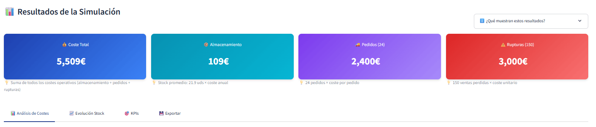
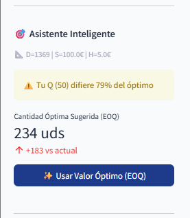

Simulador de cadena de suministro con tablero financiero P&L integrado. Modela un año completo de operaciones con eventos discretos (SimPy) y muestra el impacto de cada decisión de inventario en euros, no solo en unidades.
Permite experimentar con los parámetros clave de una política de inventario — punto de reorden (ROP), cantidad de pedido (Q), lead time, patrones de demanda y estructura de costes — y ver al instante cómo afectan al coste total y al nivel de servicio.
La app carga con datos de demostración pre-ejecutados (experiencia «0 segundos»): gráficos, métricas financieras y tablero P&L visibles inmediatamente, sin configurar nada.
El simulador puede tardar unos segundos en arrancar la primera vez mientras Streamlit Cloud carga las bibliotecas de Python. Después la experiencia es fluida.




El motor SimPy ejecuta 365 días de operación en menos de un segundo (vectorización NumPy + procesos concurrentes): genera demanda diaria, gestiona el inventario según la política ROP-Q, y registra pedidos, entregas, rupturas y costes en cada evento.
Datos semilla con simulación pre-calculada en el session state: la primera pantalla ya muestra resultados reales, no un formulario vacío.
Traducción de unidades a euros: ingresos potenciales, % costes/ingresos y desglose P&L con formato ejecutivo.
365 días simulados en <1 s gracias a vectorización NumPy y procesos concurrentes de SimPy.
Comparación automática base vs escenario modificado con Δ ingresos, Δ costes y ROI neto al mover un slider.
Theming corporativo con contraste 14,7:1 (WCAG AA), tooltips explicativos y validaciones en tiempo real.
Session state de Streamlit que preserva resultados entre interacciones y exporta sin pérdida de datos.